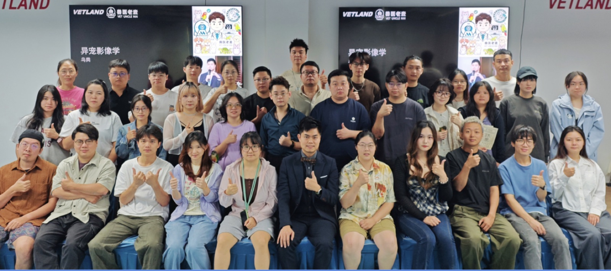
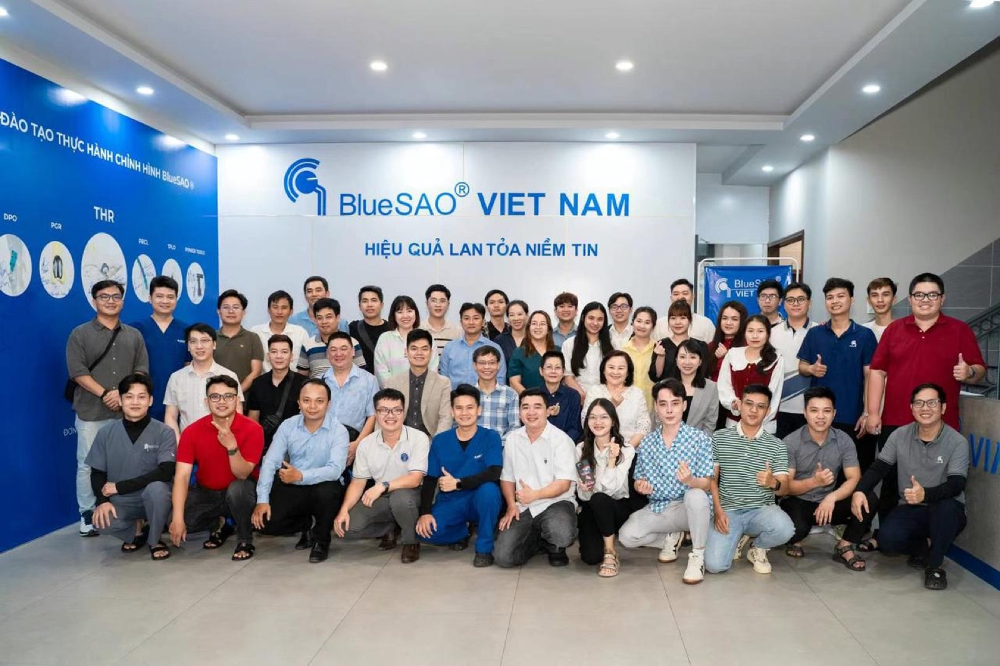
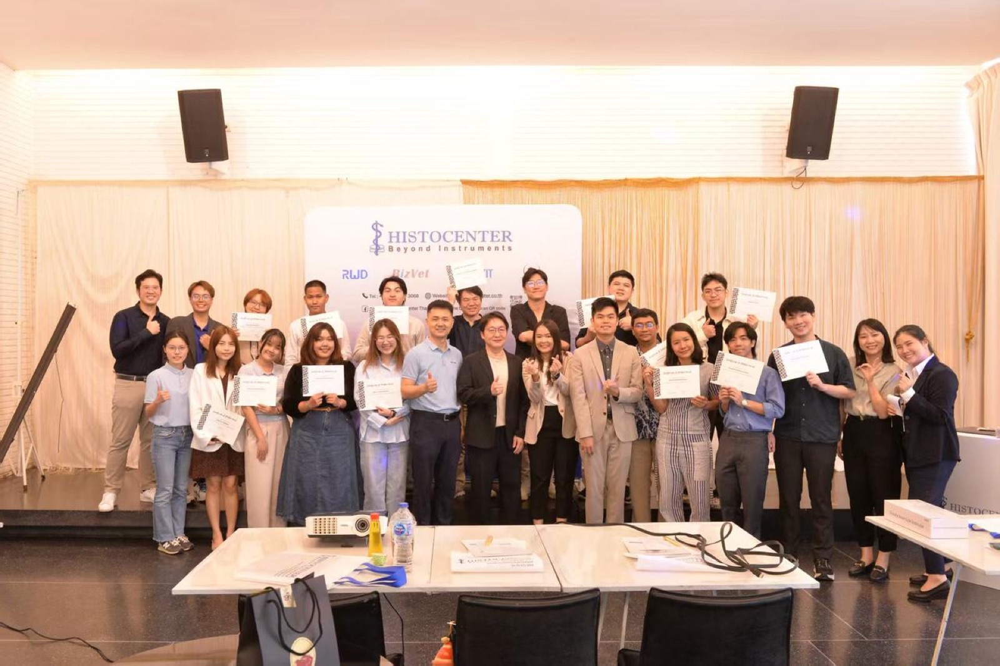
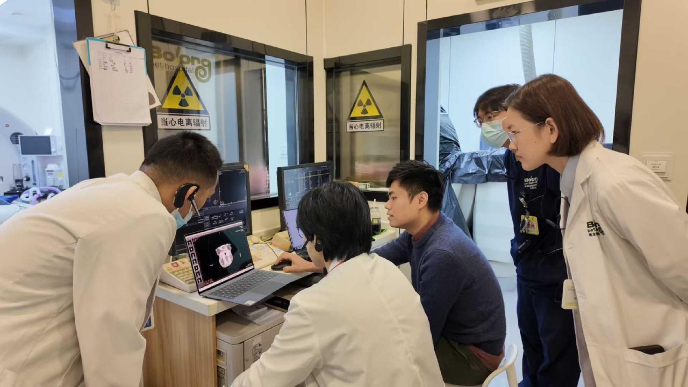

LUMORA connects veterinarians, specialists and clinical practice, making high-quality imaging interpretation and education accessible to clinicians worldwide.
Upload studies in a few clicks within an intuitive workflow.
Radiology reports interpreted by certified specialists.
48-hour standard turnaround, with priority for urgent cases.
End-to-end encryption of study data and patient information.
A veterinary radiologist and neurologist with a decade of clinical expertise in CT and MRI interpretation. Jiaxun provides specialist oversight for LUMORA’s reports — across companion animals, wildlife, and exotic species, from reptiles and birds to rabbits and small mammals.
Submit radiographs, CT and MRI studies and receive structured radiology reports without leaving your workflow.
Subspecialty interpretation by certified veterinary imaging specialists across all major modalities.
End-to-end encryption of study data and DICOM images, with patient privacy protected throughout.
A 48-hour standard turnaround for routine studies, with prioritized reads for urgent cases.
We have taught veterinary imaging courses in many countries — including China, Vietnam and Thailand — where our teaching has been widely recognized and warmly received.




From routine radiographs to advanced CT and MRI, we support your practice at every level.